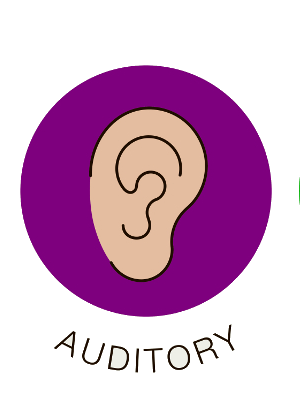

Auditory learners learn best when information is presented in a spoken language format. If you are an auditory learner, the suggestions that follow can help you to succeed in school to the best of your ability.

- Auditory Learner Participate in study groups in which you can talk things out.
- If allowed by your teacher, use a recording device to record class sessions.
- Use the recordings to support your written notes.
- Use a recording device to record important information from your textbooks so that you can listen to the information as frequently as needed.
- Work out math problems aloud, explaining to yourself the steps you are doing.
- Repeat facts and definitions of words over and over to yourself with your eyes closed.
- Create musical jingles or songs to remember information.
- Dictate assigned papers and type them later.
- Participate in class discussions as much as possible.
- Look for books on tape or other audio materials when learning about a subject.
- Be certain that your study place is free of auditory distractions.
- When you encounter new words while reading, sound them out syllable by syllable.
- Sit in front of the class to minimize things that might distract you from what your teacher is saying.
- Read aloud when doing proofreading.
- Try these suggestions and learn which ones work best for you.